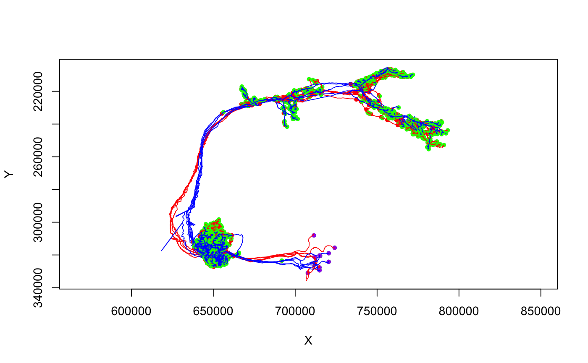

tpsreg creates an object encapsulating a thin plate spine
transform mapping a paired landmark set.
xformpoints.tpsreg enables xform and
friends to transform 3d vertices (or more complex objects containing 3d
vertices) using a thin plate spline mapping stored in a tpsreg
object.
tpsreg(sample, reference, ...) # S3 method for tpsreg xformpoints(reg, points, swap = NULL, ...)
| sample, reference | Matrices defining the sample (or floating) and reference (desired target after transformation) spaces. See details. |
|---|---|
| ... | additional arguments passed to |
| reg | The |
| points | The 3D points to transform |
| swap | Whether to change the direction of registration (default of
|
Note that we use the nat convention for naming the
sample/reference space arguments but these actually clash with the
nomenclature in the underlying Morpho::tps3d
function.
refmat (Morpho3d) == sample (nat)
tarmat (Morpho3d) == reference (nat)
# \donttest{ ## A full worked example of using landmarks based registration to construct ## a mirroring registration from one side of the brain to the other. # read in set of landmarks defined in FAFB CATMAID emlandmarks=read.neurons.catmaid('annotation:^GJLandmark') # Match up L and R pairs library(stringr) emlandmarks[,'side']=str_match(emlandmarks[,'name'], "([LR]) Landmark")[,2] emlandmarks[,'shortname']=str_match(emlandmarks[,'name'], "(.*)([LR]) Landmark.*")[,2] emlandmarks[,'shortname']=sub("[_ ]+$", "", emlandmarks[,'shortname']) library(dplyr)#> #>#> #> #>#> #> #>#> #> #>#> #> #>lmpairs=inner_join( filter(emlandmarks[,], side=="L"), filter(emlandmarks[,], side=="R"), by='shortname', suffix=c(".L",".R")) # find mean xyz position of each landmark (they are drawn as a little cross) lmxyz=t(sapply(emlandmarks, function(x) colMeans(xyzmatrix(x)))) # construct thin plate splines registration mirror_reg=tpsreg( lmxyz[as.character(lmpairs$skid.R),], lmxyz[as.character(lmpairs$skid.L),] ) # map RHS DA2 PNs onto left and compare with LHS neurons da2pns.R=read.neurons.catmaid('glomerulus DA2 right') da2pns.L=read.neurons.catmaid('glomerulus DA2 left') da2pns.R.L=xform(da2pns.R, reg = mirror_reg) plot(da2pns.L, col='red')# }